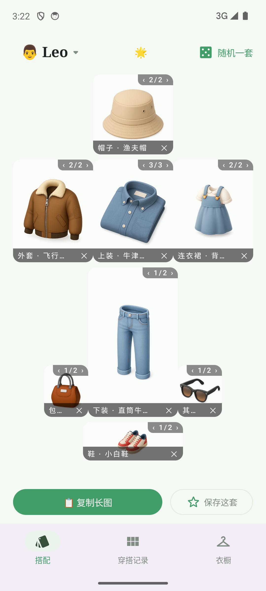
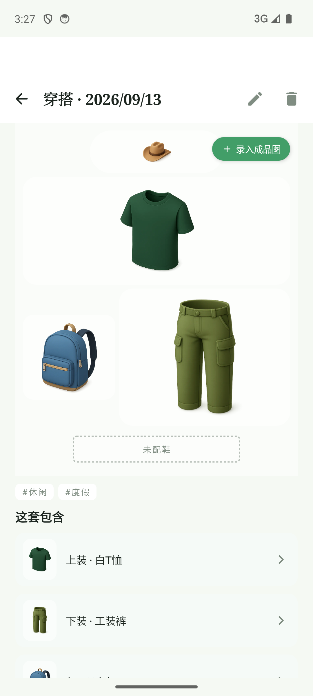
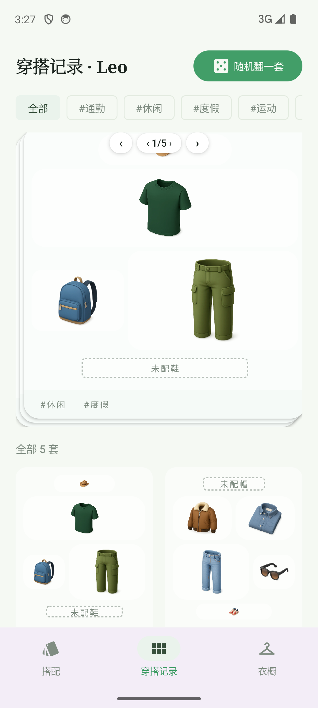
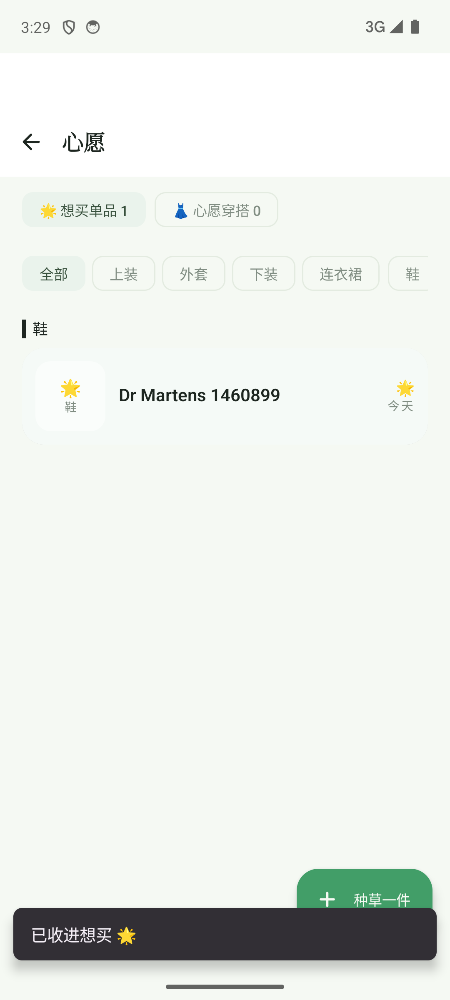
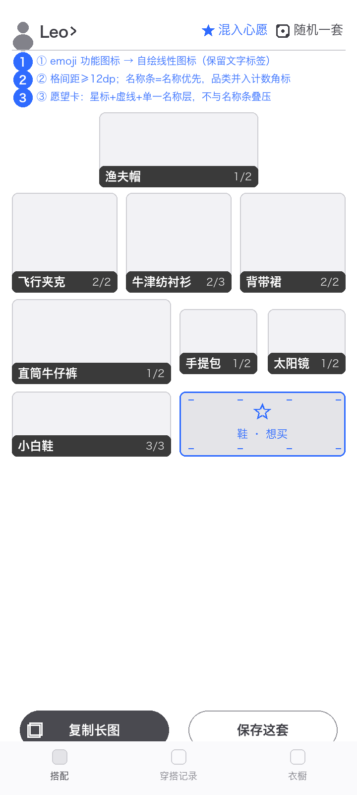
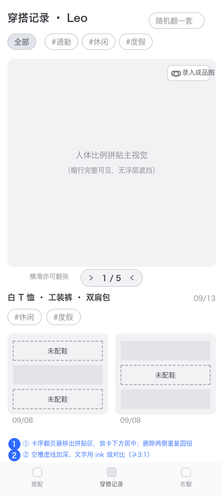
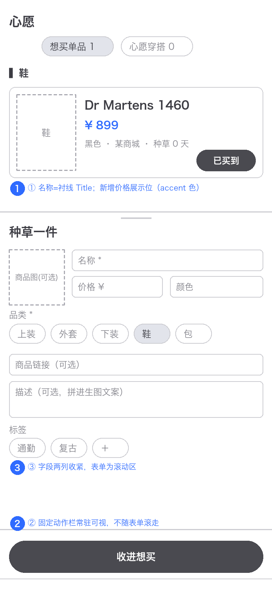
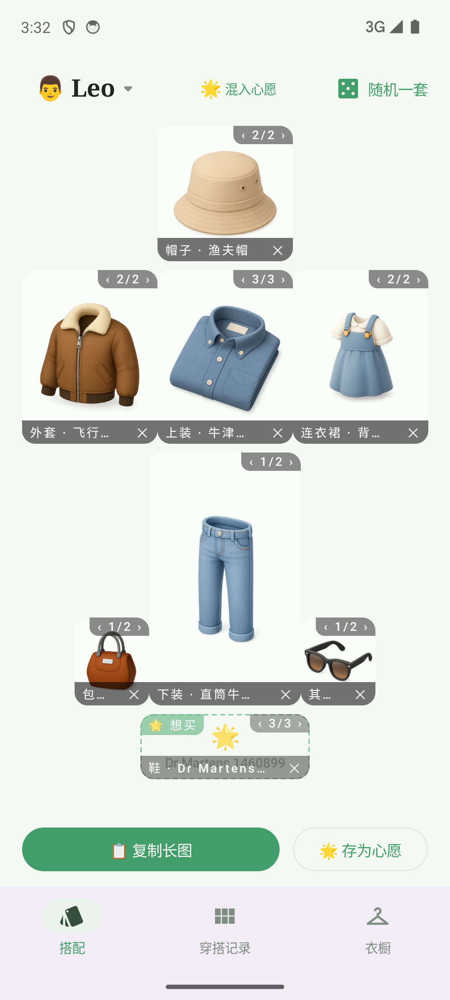
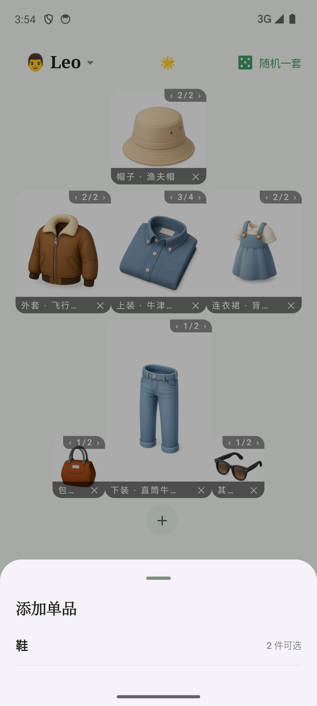
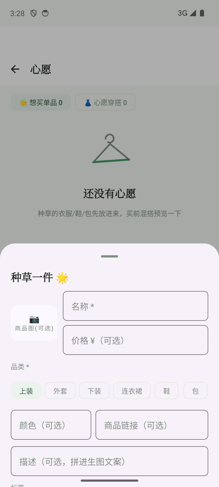

问题清单：P0×3 / P1×12 / P2×15。P0 与红线项均经 uiautomator dump、源码核对或 logcat 实锤（评审方法见下）。
最新代码构建 installDebug + 演示数据（17 件/5 套），逐页导航截图，过程态（筛选/弹层/愿望卡/去背景）单独采集
5 批并行视觉评审，对表 DESIGN.md 硬 token/触控/动效/反例清单，关键色值经像素采样核实（导航紫 #F3EDF7 族、深色墨绿 rgb(16,21,15)）
uiautomator dump 断言 + 源码核对：崩溃复现留 logcat 实录，删除链路、胶囊点击、表单吸底逐一验证
| # | 问题 | 涉及页面 | 级别 | 修法（对应线框） |
|---|---|---|---|---|
| C1 | 混入心愿关闭崩溃 | W1 | P0 | SlotGrid.kt:114 items[page] 越界，收缩列表时 pager 页码未 clamp。修法：currentPage.coerceIn + 收缩时回卷页码（实测 1） |
| C2 | 底部导航/弹层偏紫，跳出纸感家族 | W3 · W6 · 全局 | P1 | WardrobeTheme 未覆盖 M3 surfaceContainer 色阶，跌回 Material 默认 #F3EDF7 族（像素采样证实）。修法：light/dark 补 surfaceContainer 全家族 = paper 同族色 |
| C3 | emoji 当功能图标（系统性） | W1/W3/W4/W7/W10 | P1 | icon-only 🌟 入口按 P0 处理（见 W1 页）；📋🎲🌟📷 及 W4 品类 chips 为 P1（带文字）。注：品类圆 chip 系 it-012 的 spec 决策、早于 DESIGN.md v1.0，建议专项「去 emoji 化」迭代统一裁决 |
| C4 | 卡片实体名未走衬线 Title | W3/W10 | P1 | 单品/心愿卡名称为粗体 Sans，违反 §2.3「Title 衬线、实体名衬线」。修法：卡片标题统一 serif |
| C5 | W1 名称条截断与零间距 | W1 | P1 | 「品类 · 名称」前缀占预算致 1–2 字截断；格间距 ~10px 连成深色带。修法：名称优先 + 间距 ≥12dp（线框①） |
共性问题 C6–C10；级别徽标：P0 违反红线 / P1 违反基线 / P2 可打磨。修法列标注对应主题页与线框徽标。
| # | 问题 | 涉及页面 | 级别 | 修法（对应线框） |
|---|---|---|---|---|
| C6 | W8 翻页器压住拼贴内容 | W8 | P0 | 「‹1/5›」浮层压帽行七成。修法：翻页器外置卡下方（线框②） |
| C7 | W7 打卡主按钮层级拉平 | W7 | P1 | 「今天穿了这套」与「复制长图」同尺寸同 accent 实底；it-018 spec 要求打卡=全宽实心，实现为中心胶囊。修法：恢复全宽实心 + 次按钮改描边 |
| C8 | 评论删除无确认无撤销 | W5 · W7 | P1 | 两处 onDelete 直删（CommentTimeline），违 §5.7 红线；对照：单品/穿搭/角色删除均有确认弹窗。修法：二次确认或 snackbar 撤销，二选一 |
| C9 | 种草表单吸底失效 | W10 | P1 | 主按钮初始视口不可见 + 末行截断。修法：固定动作栏（线框③②） |
| C10 | 空态缺行动按钮 | W9 | P1 | 「还没有穿搭打卡」空态卡只有图形+文案，无「去打卡」直达，违 §5.8。修法：空态卡加行动按钮 |


换装游戏式组合与愿望混入的机制清晰成立，但 emoji 功能图标触红线、窄格名称条截断到 1–2 字、愿望卡出现双层名称叠压；且存在一个真实崩溃：愿望页停留时关闭混入心愿必崩。

纸感编辑风与卡组节奏成立，但卡序翻页器浮层直接压在拼贴帽行上——主视觉被控件遮挡是本页必须先修的硬伤；翻页语义还存在三重冗余。

空态与分组印刷母题达标，但种草表单的「吸底」主按钮初始视口不可见、末行被截断；心愿卡缺价格展示位、实体名未走衬线——转化主路径的版式需要一次收拢。

按仓库迭代流程确认后动工；先修共性问题（功能在但用户够不着/猜不到），再修各 App 核心体验。
| 线框 | 内容 | 对应 |
|---|---|---|
| C1 | 崩溃修复：pager 页码 clamp + 列表收缩回卷（含单测：愿望项收缩场景） | W1 |
| C8 | 评论删除加二次确认或 snackbar 撤销 | W5 · W7 |
| C2 | surfaceContainer 色阶补齐，导航/弹层回纸感家族 | 全局 |
| 线框 | 内容 | 对应 |
|---|---|---|
| C3 | 🌟 心愿入口优先换 Material icon（icon-only 是 P0）；其余带文字 emoji 按钮统一线性图标 | W3 · W1 |
| C4 | 卡片实体名统一衬线 Title | W3 · W10 |
| C3 | W4 品类 emoji chips 专项裁决：内容插画 or Material Icons | W4 |
| 线框 | 内容 | 对应 |
|---|---|---|
| C5 | W1 格间距 + 名称条「名称优先」 | W1 |
| C6 | W8 翻页器外置 + 空槽对比 | W8 |
| C9 | W10 种草表单固定动作栏 + 价格位 | W10 |
| C10 | W9 打卡空态加行动按钮 | W9 |
| 项目 | 结论 |
|---|---|
| 混入心愿开→鞋格翻至愿望页(3/3)→关闭混入 | FATAL IndexOutOfBoundsException（logcat 实录，SlotGrid.kt:114）——P0 崩溃实锤 |
| 序号胶囊 ‹n/n› 点击（中部+右箭头各试） | 两次均穿透进单品详情；源码 SlotGrid.kt:185 为纯 Text 无点击处理——伪按钮 |
| 横滑卡片翻页 | 正常（鞋格 1/3→2/3→3/3），翻页本体功能可用 |
| 评论删除链路核对 | W5/W7 源码两处 onDelete 直删，无确认无撤销；对照：单品/穿搭/角色删除均有确认弹窗 |
| W4 添加衣物全链路 | 相册选图→「去背景」本地推理成功（已去背景·透明底+还原）→保存成功，衣橱 17→18 件 |
| 种草一件表单 | 保存成功；但「收进想买」初始视口不可见（dump 证实），标签行被底缘截断 |
| 标签筛选 #通勤 | 筛选结果正确；「筛选·1」计数 chip 加宽后加重行尾对品类圆 chip 的硬切遮挡 |
| 添加单品弹层（等待 2.5s 复核） | 候选列表区仍零高度，仅「鞋｜2 件可选」+品类 chip；功能为点品类即加入 |
| 深浅色切换 | 深色为墨绿纸重绘（页底 rgb(16,21,15)，非纯 #000 合规）；但 W1 深色身份偏弱 |
| 删除确认链路 | 单品（pendingDelete 对话框）/穿搭（后果说明对话框）/角色（连带数据+件数）三处均有确认 |
| 演示数据与心愿数据 | 17 件/5 套脚本灌入 + 1 条心愿经 UI 真实创建（混搭预览/存为心愿按钮态均验证） |
| 构建与安装 | git 607d264 最新代码 installDebug 全绿；走查全程除 C1 崩溃外零 FATAL |



现状截图与改版线框见 assets/ 目录；本报告由 report_template.py 生成，可改数据重出。